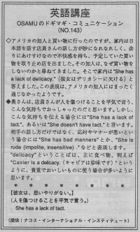

思いやりがない。
She has a lack of tact. Osamu and his wife went shopping with an American friend but his wife didn't like the salesperson who spoke Japanese. She spoke too friendly. His wife didn't buy anything. The American friend asked why she didn't buy anything. His wife said "She has a lack of delicacy." The friend didn't understand what she meant by this sentence.
アメリカの知人と買い物に行ったのですが、家内は日本語を話す店員さんの話し方が妙になれなれしく、余りにあけすけなので不快感を持ち、予定していた買い物を取り止め店を出ました。その知人は、なぜ買い物をしないのかと尋ねてきました。そこで家内は、She has a lack of delicacy. （彼女はデリカシーに欠ける）と答えました。この表現は、アメリカの知人にはまったく通じなかったようです。
奥さんは、店員さんが人を傷つけることを平気で言う、こんな気持ちでおっしゃったのだと思います。しかし、こんな気持ちを伝える場合には、She has a lack of tact.、あるいは、She doesn't have tact. と言います。相手の話し方だけでなく、応対やマナーが悪いという場合には 、She has bad manners. とか、 She is rude (impolite, insensitive.) などと表現します。 delicacy ということばは、主に食べ物、例えば 、Cavier is a delicacy.（キャビアは珍味です）というように、貴重でおいしいものに使う場合が多いように思います。
彼女は思いやりがない。
（人を傷つけることを平気で言う。）
She has a lack of tact.

| © 1995-2013 NACOS International Institute. All Rights Reserved. |